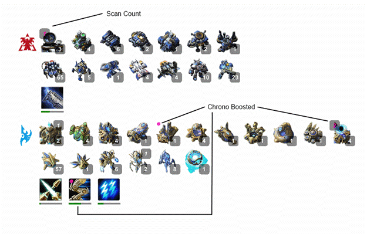
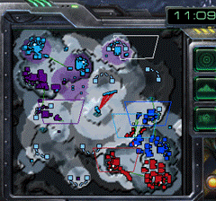

v3.15 08/07/15
Changes:
· Updated offsets to support SC version 2.1.11.36281.
The offsets have not been extensively tested. If you encounter an issue please report it via the built-in 'bug report' feature.
--------------------------------------------------------------
v3.144 14/06/15
Fixes:
· Minimap Alerts:
§ Town hall rally was broken in v3.142+
§ Unconverted Gateways....not sure when I broke this.
v3.143 11/06/15
Changes:
· Tweaked the minimap alignment for certain maps.
· Modified the method by which unit types are removed from selection when using quick select.
Fixes:
· The select loaded transports function failed when the selection contained hellbats and hellions, tanks and sieged tanks, or vikings and landed vikings.
v3.142 02/06/15
Changes:
· Automations and minimap alignment will work correctly regardless of SC window size and position.
In other words, true windowed mode is now supported. This does not require a restart.
· Improved the safety mechanism that ensures overlays are positioned inside the screen display area on multi-monitor setups.
· In response to a resolution change or removal of a monitor, overlays will be automatically repositioned if they are no longer (partly) visible.
· Some pseudo-thread tweaks for background automations.
Fixes:
· Auto convert gateway function failed if the 'forgotten gateway/warpgate' warning was disabled.
v3.141 14/05/15
New:
· Mass Recall and Photon Overcharge.
§ Double tapping the SC ability hotkey will cast the spell on the nearest nexus.
· Global Stim
§ While the unit selection contains marines or marauders, pressing the SC stim ability hotkey will cast stim regardless of which subgroup is active.
· The above functions are listed under Misc. Automations -- > Smart Abilities.
Changes:
· Added SC 2.1.10.35237 to the supported client list.
§ No offsets were changed, so the previous version will still work.
Fixes:
· Grid hotkey layout issue. As a result of sending the incorrect SC cancel hotkey, some automations could fail under certain conditions.
· QuickSelect hotkeys were not fully disabled after a match or settings change.
v3.14 08/05/15
New:
· Enemy upgrade warnings:
§ Provides a verbal and an optional minimap warning on commencement of an upgrade.
§ Includes all standard upgrades, as well as important structure upgrades, i.e. mutate lair, mutate hive, and mutate greater spire.
§ Listed under Options --> Warnings --> Detection Lists --> Upgrade Warnings.
Changes:
· Added a single click button to the unit filter GUI. This automatically converts the match overlay into a production only overlay.
· The minimap alerts provided by the unit detection function are now optional.
· Added a delay setting to the convert gateway function.
§ This allows the function to act as a backup for when you forget to convert a gateway. That is, it provides you with a chance
to convert the gateway manually.
Fixes:
· Closing the options menu shortly after clicking 'Apply' could result in the changes being discarded.
· Hallucinated units were being drawn on the minimap using the invisible highlight colour.
· Smart-geyser could invoke chrono boost when nexus was rallied to a geyser.
· Unit detection:
§ It was possible that newly added alerts would not be activated until the program restarted.
§ Alerts added during a match would not become active until the next game.
§ Alert editor GUI bug. When two alerts shared the same name and game mode, only one of them would be editable.
· The convert gateway function will no longer attempt to convert gateways which have a unit in production.
· A spacing issue when the match overlay was in production only mode.
v3.13 23/04/15
Notes: Due to the changes below if you use automations please ensure the current settings are still appropriate.
Fully implementing the active starcraft hotkey profile into the program has required considerable changes.
If you experience any bugs with this version please submit a bug report while logged into starcraft! And include your email address!
The previous version of this program is stored in the "Old Macro Trainers" folder or can be downloaded from the website.
New:
· Automation to convert warpgates into gateways.
§ When enabled this becomes active after you manually convert your first gateway.
Changes:
· All SC hotkeys are now read from the game.
§ You no longer need to define SC hotkeys in the trainer options menu!
§ Note: Swapping the behaviour of the right and left mouse buttons inside SC is not currently supported.
· Simplified automation settings.
§ You no longer need to define storage control groups or APM thresholds for each automation.
§ The new 'Automation Setup' tab defines the above settings for each race.
· The unload transports on mouse over/hover (AKA easy select / easy unload) function has been removed
§ The 'easy select' loaded transports functionality still exists, but it has been renamed 'select loaded transports' and fires on hotkey down.
· The 'unload all' transports function has been renamed 'unload selected transports'. The functionality remains the same.
· The toggle auto worker and auto inject hotkeys can now be disabled.
· Tentative support for ultra widescreen displays (resolutions > 1920x1080)
§ This assumes that the game resolution is 1920x1080 and is positioned in the top left corner of the primary monitor.
· Flying locust upgrade added to the overlay panels.
· The match overlay (unit panel) now displays a scan count decimal value in the top left corner for orbital commands.
§ This indicates how close the next scan is to being available. It accounts for commands centres morphing into orbitals.
· The bug report feature now includes your active SC hotkey profile - providing you are currently logged into SC.
· A 1.5 MB file size reduction. A big thanks to Jeff/SkillCoder.
· Restrict grouping and auto grouping have individual settings in the options menu.
· Previously if a background automation occurred while users were pressing the starcraft pause, base camera, or previous alert hotkey this would
cause the game hotkey to fire twice.
Fixes:
· A hotkey/grouping error which would prevent auto-build working with left grid hotkey profiles.
· Restrict grouping failed when using non-standard hotkey combinations.
v3.121 26/03/15
· Fixed a bad offset relating to starcraft hotkeys.
v3.12 25/03/15
New:
· Town hall rally warning.
§ Issues a verbal and minimap warning when the rally point of a town hall has not been set.
§ With regards to Zerg, this warning is only issued for the resource gathering rally point.
§ Located under 'Warnings' --> 'Rally'.
· Multi-Overlay Toggle hotkey
§ This hotkey allows multiple overlays to be toggled on or off.
Changes:
· Updated offsets to support SC version 2.1.9.34644.
· Added additional customisable delays to the one button larva injects.
· Most of the overlay toggle hotkeys can now share a common hotkey.
Fixes:
· An issue which would prevent auto-build producing units that required an existing tech structure (e.g. ghosts). This occurred when a particular set of unrelated settings were disabled.
· Fixed a screen DPI issue which could result in the auto-build overlay not being drawn.
Notes:
·
I haven't
tested these offsets as thoroughly as I noramlly do.
Please report any issues.
· Setting Changes:
The 'Local Upgrades' overlay now has a drop down list to select the display mode (time reaming or progress bar).
The 'Match' overlay (unit panel) now has a single 'enable' checkbox and a dropdown list to select the display mode for units and upgrades.
If you use either of these overlays you
should check to ensure that these two settings are appropriately set and then
click 'Save' or 'Apply'.
v3.11 3/01/15
Changes:
· The unit panel can now display local units.
· Added SC 2.1.8.33553 to the supported client list.
§ No offsets were changed so version 3.10 still works.
· Refined some of the delays within the auto-worker and auto-build functions.
Fixes:
· Auto-Worker:
§ Normally when a command centre finishes building or lands it will not produce a worker for approximately four seconds. This provides time to convert or lift it.
There was a bug which prevented this from reliably occurring.
§ A minor/obscure grouping bug.
§ Previously there was a chance that the camera would jump to the town hall when making a worker. This should no longer occur.
This only occurred when a worker was made while the town hall control group key was already pressed.
v3.10 18/12/14
Fixes:
· Quick select:
§ Quick select items would fail to function if their unit type field (filter by unit types) was empty. This occurred even when both the "keep these units" and "remove these units" options were disabled.
· An issue with reading the active hotkey profile.
· Automation functions:
§ Previously there was an inadequacy in how control grouped units were detected, consequently there was a small chance that various functions could malfunction under a rare set of conditions.
§ Auto worker, auto injects, and auto build could fail to restore unit selection post automation i.e. production facilities / queens would be left selected. This occurred when the unit
selection only contained workers who were currently inside a refinery, assimilator, or extractor.
· Chrono boost:
§ The nexus control group within the options GUI can now be set to group 0.
· Smart geyser:
§ Return cargo command was not being sent correctly when the selection contained non-harvesters.
· Unit detection warnings:
§ There was a small chance that a repeat warning would not occur when a unit was remade after being killed. A specific set of events had to occur for it to fail.
· Inject Larvae:
§ The "Queen Can Inject Multiple hatcheries" option was accidentally disabled in version 2.985 (over a year ago).
v3.09 5/12/14
Changes:
· The 'Detection List' section in the options GUI is now listed within the 'Warnings' section.
· Added SC version 2.1.7.33148 to the supported client list.
§ No offsets were changed in this SC patch, so previous versions will still function correctly.
· Auto worker:
§ Added an optional verbal warning which is issued when the max worker count is reached.
New:
· Auto build (unit production).
· Smart geyser:
§ Right clicking a group of workers towards a refinery, assimilator, or extractor will only send the
correct amount of workers to harvest gas.
v3.08 2/11/14
Fixes:
· A bug introduced in v3.07 which could cause the army overlay to be drawn incorrectly.
V3.07 30/10/14
New:
· Overlay backgrounds:
§ Listed Under Minimap/Overlays --> Background.
§ Colour and opacity are customisable.
§ Support for additional overlays may be added in the future.
Changes:
· Added SC version 2.1.5.32392 to the supported client list.
§ No offsets were changed in this SC patch, so MacroTrainer v3.05 and v3.06 still work.
· Unpowered Protoss upgrades will be greyed/strikedout in the local upgrade overlay.
· Unpowered gateways will no longer trigger the convert gateway/warpgate warning.
· Auto Chrono no longer boosts unpowered structures.
· Launcher:
§ When MacroTrainer is started if Starcraft is not running it can now optionally launch Starcraft or the Battle.net app.
§ Listed under Settings --> Launcher.
§ Updated to support more recent (HotS/Battle.net) installations.
V3.06 8/10/14
Added SC Vr. 2.1.5.32392 to the supported client list.
V3.05 24/09/14
Changes:
· Added support for SC version 2.1.4.32283.
Fixes:
· Unit Panel:
§ The fully constructed nuclear missile count was missing.
§ Nukes in production are now displayed in the unit section rather than the upgrade section of the panel.
v3.04 15/09/14
PLEASE READ THIS IF YOU USE QUICK SELECT! If you don't you might
have issues!
A number of changes have been made to the Quick Select function.
Please read the 'Changes' section below and the GUI tooltips associated with the new options.
The 'Remove units outside of camera view' option has been removed.
This behaviour can be replicated by setting the 'Starting Selection' to 'Units On Screen'.
Specific unit types can now either be kept or removed. In previous versions unit types could only be kept.
Check the 'Keep these types' option to replicate this behaviour.
You should then click 'Save' or 'Apply' even
if the settings already appear correct.
New:
· Geyser Oversaturation Warning:
§ A verbal warning is issued when too many harvesters have been mining from a geyser for too long.
§ The geyser is marked on the minimap if the 'Display Alerts' option is enabled. (MiniMap/Overlays-->General)
§ Like other warnings the specific parameters required to invoke the warning can be set.
· Injects:
§ Added a 'Conserve queen energy' option.
§ When enabled queens will not inject hatcheries which have 19 larvae. (SC limits hatches to a maximum of 19 larvae)
· Unload all selected transports function:
§ This will immediately begin unloading the selected transports.
§ The transports (medivacs, warp-prisms, phasing warp-prisms, and overlords) must be the highlighted/tabbed subgroup.
§ Listed under Misc Automation --> Easy Select/Unload --> Enable Unload All. Click the 'About' button for more details.
§ If using the default SC hotkeys you simply need to double tap 'd' - the unload all button.
· Chrono Boost:
§ Added a current 'selection mode'.
§ Select the structures you want to chrono and then press the hotkey.
§ The structures still need to be added to the chrono items GUI list.
· Town Hall Macro:
§ When no scans/chronos are available the real time until the next available scan/chrono is displayed.
§ When scans/chronos are available a decimal fraction is appended to the scan/chrono count. This indicates how close the next scan/chrono is to being available.
§ Morphing orbitals are accounted for in both the time until an available scan and the decimal fraction.
Changes:
· Worker Production Warnings:
§ Individual options can be set for each race.
§ Warnings can be silenced above/below a specified worker count.
§ The Zerg warnings now work in a fashion similar to the other races, that is, a warning will be heard if a worker has not been started after a period of time.
· Minimap:
§ Drawing quality has been increased slightly. Previously it was possible for the outer unit rectangle to be obscured by its fill colour.
§ The unit rectangle size has been increased by one pixel. So things may appear slightly larger on the minimap.
This helps ensure the drawn unit fully covers the actual unit on the SC minimap - so you don't get that overlapping border effect.
· The nuclear strike (warning) icon is now drawn over the top of enemy units. Previously enemy unit rectangles could obscure this alert.
· Quick Select:
· A number of changes have been made which opens up this function to a variety of possible uses.
· The starting selection can now be specified:
§ Army (the SC select all army hotkey)
§ Units on screen. This produces the same result as the 'remove units outside of camera view' option in previous MacroTrainer versions.
§ Current selection
§ Control group 0-9
§ Structures are automatically removed.
· Specific unit types can then be removed or kept.
· Units can then be removed or kept by their attributes:
§ The following attributes have been added to the current available options:
§ Attack
§ Idle
§ Empty transports
§ Hallucinations
§ Health/shield level.
· The remaining units can then be stored in or added to a control group.
· Note: Workers, queens, mules and overlords (and any other non-army unit) are not automatically removed. If the starting selection is set to anything
other than 'Army' and you are not specifying unit types to keep, you should consider enabling the 'remove these types' option and specifying these non-army units there.
Fixes:
· Select Army - Overlords and mules are automatically removed from selection when using the remove units 'outside of camera view' option
· Quick Select GUI:
§ The 'loaded transport' checkbox could be erroneously unchecked.
§ It was not possible to store units in control group 0.
· Forgotten gateway/warpgate warning:
§ Gateways which have begun converting to warpgates should no longer be warned.
§ When a warned gateway begins converting to a warpgate the minimap marker will be removed (if it was still present).
· Hallucination vs. non-hallucinated units (of the same type) were not being ordered correctly.
V3.03 21/08/14
Note changes for version 3.02 are listed here as well.
Changes:
· Added a minimum idle worker count option for the idle worker overlay.
· Hotkeys:
§ Most hotkeys will no longer function (or be captured/blocked) while the chat box is active. Active refers to being in focus and accepting input - not just being open.
§ This does not apply to the ping map, pause macro trainer, and emergency restart hotkeys.
§ Most hotkeys can now be fully disabled.
§ The exceptions are: Toggle fully automated injects, toggle auto worker production, and emergency restart hotkeys.
· Local Upgrades Overlay:
§ Upgrades are now ordered by completion. Upgrades closer to completion will be listed first. Morphing structures will always be listed after actual upgrades.
· The GUI for the auto/one-button injects has been simplified and the options arranged in a more logical manner.
· Added an option to support the enlarged minimap ability offered in the SC2-Advanced hack i.e. 'Minimal interface'.
§ This change only supports correctly drawing the enlarged minimap. Excluding the auto-grouping, none of the automatons are guaranteed to work correctly even if they 'appear' to work.
§ This option is listed under Settings --> Misc --> SC2Advanced Minimap.
Fixes:
· It was possible for the auto-group function to incorrectly add units to a control group after a particular set of events.
· The ping map ability will no longer move the camera position when the chat box is active (focused). It will also work regardless of a custom SC ping hotkey.
· The program will function correctly when resuming from replay, that is, a restart is no longer required.
· Hotkeys will no longer remain active during a replay.
§ The pause macro trainer and emergency restart hotkeys are always active.
· Unit detection warnings:
§ It was the possible for some units not to be detected/warned after multiple games. Although the chance of this occurring was relatively low.
§ A change in version 3.02 which could result in the same units being constantly warned at the start of a match.
· Overlays were being drawn in replays after alt-tabbing in and out of Starcraft.
V3.01 09/07/14
New Overlays:
· Town Hall Macro:
§ Displays basic macro information for your current race.
§ Terran: Available scans/mules
§ Protoss: Available Chronos
§ Zerg: Available larva
§ Note: Non-control-grouped town halls will not be included.
· Local Upgrades:
§ Displays your current upgrades and their respective progress.
§ Includes morphing Zerg and Terran structures.
§ The chrono state of Protoss upgrades is also indicated.
§ The number of upgrades displayed per row is adjustable.
§ Can either display a progress bar (percent complete) or time remaining.
These pictures are just for illustration (hence why there are upgrades from each race).

Changes:
· Unit Panel:
§ The mothership core will now display its current energy, rather than unit count - which can only ever be one.
§ The Nexus Photon Overcharge ability has been added.
§ Photon Overcharge can be removed via the unit filter. It's listed within the "Under Construction" filter.
§ Added an 'Align' option. Prior to this version the unit panel was always aligned.
§ If both "Align New Units" and "Split Units/buildings" are enabled then new units and new structures will be drawn aligned along a common x-axis.
§ If "Align New Units" is disabled and "Split Units/buildings" is enabled then new units and new structures will be drawn along their own x-axes independent of one another.
·


Chrono Boost:
§ If you use this function you will need to recreate your chrono hotkeys!
§ You can now create a chrono item (hotkey) which chrono boosts multiple user defined structures.
§ One possible use would be to create a hotkey for production structures and another hotkey for tech/upgrades.
§ The order in which these structures are chono boosted is also configurable. Structures listed at the top are chrono boosted first.
§ If I ever work out the unusual manner in which SC scales the minimap, then these changes will allow
fully automated (background) chrono boosts to be seamlessly added.
· Remove Damaged Units:
§ A separate shield level setting has been added for Protoss units.
§ Damaged stalkers will be blinked towards the mouse position.
· Removed the cycle overlay hotkey. I doubt anyone used it.
Fixes:
· Army Overlay:
§ The race ID icon in the army overlay is once again coloured.
· Unit Panel:
§ Terran vehicle and ship weapon upgrades were missing.
§ When multiple reactors or tech-labs were being constructed their count and progress was blank.
§ Completed tech-labs and reactors were appearing in the unit panel when no buildings were attached to them.
§ A bug which under certain circumstances could result in the last two units being drawn on top of each other when using split panels.
§ The zerg drone count was incorrect when creep tumours and nydus heads were under construction.
· Quick Select:
§ It was possible for a disabled item to be invoked if it shared the same hotkey as an enabled item.
· Fixed a massive memory leak in the custom colour picker (in the options GUI). This only occurred when you attempted to change a custom unit colour/highlight.
· Hotkeys:
§ The toggle (enable/disable) auto-inject hotkey was disabled while the manual inject method was set to 'disabled'.
§ The easy unload hotkey was not being disabled after a match.
V3.00 17/06/14
PLEASE READ THIS! - If you don't you might have issues!
The control groups used by the various automations/macros are now
displayed in a consistent drop down list within the Macro Trainer options GUI.
If you use any automations please ensure that the appropriate listed control groups are correct.
After doing this click 'Save' or 'Apply' even
if they appear correct.
If you use non-standard SC2 control group hotkeys (and automations), then you will need to modify the "Set/Add/Invoke control group" keys listed under "SC2 Keys" within the Macro Trainer options GUI.
Note: Within the select army function GUI, the checkbox "Control Group the Units" has been removed. If you wish to disable grouping in this function simply select "Off" from the control group drop down list.
Changes:
· Created a new overlay thread which contains all of the overlays excluding the minimap, which already had its own.
§ This allows for more consistent and frequent overlay refreshing.
§ You can modify the overlay refresh rates in the options menu. Lower numbers result in more frequent refreshing.
· A couple of minor modifications have been made to the AHK_H source code which runs this program.
§ The custom low level input hooks which this program uses during macros now only need to be installed
during macros and then are immediately removed. This will significantly reduce context-switching/overhead
and possibly help the few people who have reported laggy input.
§ This also provides a much cleaner solution to maintaining the correct key states.
· Tweaked the drawing quality of the overlays (pictures/icons). This is improvement is more noticeable if you have decreased the size of the overlays.
· Added the current SC2 version (2.1.3.30508) to the supported client list.
· Storing and restoring unit selection during a chrono boost is now optional. Select 'off' from the control group list to disable.
Fixes:
· Auto-Injects and auto-worker functions were not always restoring the correct selection (panel) page .
§ This occurred when the current tabbed subgroup was not on the page being displayed.
· Remove damaged Unit function was sometimes removing the wrong units.
· Added random window titles to a couple of hidden windows (previously forgot about these).
· Names containing non-English/Latin characters should be displayed correctly.
· Names being cut off in the unit overlay when only upgrades were being displayed and there were no current upgrades in production.
· Inadequate spacing between the names and the overlay information - an issues with measuring GUI text length.
· Pausing macro trainer will actually hide the minimap.
· Invoking the easy select (transports) function while the mouse targeting reticle is displayed will no longer prevent
the transports being selected.
· A number of internal things which most people wouldn't care about.
Notes: I've modified a lot of code, so if you find a bug please report it! If you do report something, please use the bug report function.
V2.990 28/05/14
Fixes:
· A crash on exit/restart due to GDI unload.
· Application hanging on exit/restart due to an issue with the speech module (this one wasn't my fault!).
· Missing icons in the options menu when the application is installed (ran) for the very first time on a new system
· Overlays:
§ An issue which could result in the minmap and unit panel alternating between a clear and blurred appearance.
§ The progress bars in the unit panel should now appear slightly 'crisper'.
§ The text in the army panel is no longer bolded.
§ The transparency of the APM overlay can now be altered.
§ An issue which would sometimes hide the overlays after they had been adjusted/moved.
§ An issue which caused the unit panel to 'flash' on/off when displaying only upgrades (no name or race icon IDs)
and there were no current upgrades in progress.
§ Adjusting an overlay size so that it is unsuitably large (larger than the screen) will no longer make the overlay disappear.
§ All overlays now use randomly generated titles. This security measure isn't required, but it's simple to do and does no harm.
· Added the current SC2 version (2.1.2.30315) to the supported client list.
§ No offsets were changed, so the previous trainer version also works fine.
· Minor changes to the input system. (Added some rarely used keys)
· Speech volume fluctuating during a volume test. (When using the 'test' button in the options menu)
· Setting the speech volume to 0 silences the module. Previously this was the same as setting the volume to 100%.
Misc:
· Updated to the lasted build of AHK_H
V2.989 8/04/14
New:
· Version checker will load the correct offsets for the current SC2 version (if they exist).
· Quick Select and select army functions:
§ Select/Filter only the units on screen.
Fixes:
· Thors using the high impact payload ability will no longer disappear from the unit panel.
· The temporarily-hide-minimap function will also hide minimap alerts and player cameras.
· The auto-worker feature will produce the correct number of workers on Habitation Station LE
§ Previously it would continue to make workers until the max worker count had been reached
or it could prematurely stop depending on where you expanded to.
V2.988 5/03/14
New:
· Updated offsets for SC2 version 2.1.1.29261
· Remove damaged units function
§ Removes damaged units from selection and sends them to the mouse location.
§ I intended to test this more extensively, but I've included it anyway. It seems to work fine.
· Added an APM overlay
· APM, income, resource, and army size overlays can now display your own statistics.
§ I added this a few months ago, but it was disabled/hidden. It seems to be working, so I've unhidden these options.
Fixes:
· An issue which could cause the sleep inject variance and overlay opacities to change values between updates
· The key "0" can now be used a hotkey for quick select items.
V2.987 22/02/14
Minor bug fixes.
Fixes:
· Quick Select:
§ Issue preventing the creation of Zerg items.
§ The remove from selection options would not work if the quick select item only had one unit type.
V2.986 23/01/14
Know Issue:
· Auto Grouping
§ On rare occasions this function seems to stop working.
If this occurs simply restart the program via the restart hotkey
default is right windows key + space three times.
§ I may have fixed this issue - not sure, still testing it.
New:
· Updated offsets for SC2 version 2.1.0
· Unit/Match panel
§ Now capable of displaying build progress bars for units and structures
§ Displays the number of chrono boosts available to enemy tossers. (Displayed as blue text on the nexus portrait)
· New update method.
§ This should fix an update issue experienced by some people which were using directory paths containing non-english characters.
· Quick select function
§ This allows you to select any number of (army) unit types with a single hotkey press
§ Hotkeys can be specified for any number of unit types/groups
· Auto Grouping/Restrict Grouping
§ Custom hotkeys for people who use non-standard SC2 hotkey configs
§ User adjustable delays which might help increase reliability for some people.
· New Inject warning
§ Will issue a warning x (in game) seconds after your last inject
· The transparency of all overlays can now be individually set.
· Added additional structures to the chrono boost function.
· Terran Auto Worker Production
§ Recently landed command centres will not make workers for 10 in game seconds,
allowing time to convert it into an orbital
§ Recently completed morphing orbitals which are NOT in the correct position/near
a geyser (e.g. built inside your base not at an expansion) will not make a worker
for 20 in game seconds allowing time to lift and land it at an expansion.
Fixes:
· Minimap 'x' warnings will no longer mark the wrong unit if the unit dies during the warning.
· The custom unit highlight list 7 will now actually highlight these units
· Overlays should now always be destroyed and remade when alt-tabbing.
· An issue which could result in some verbal warning not being announced if multiple verbal warning occurred next to each other.
· A bug which resulted in cessation of auto injects (until the function was toggled) when all of the user's hatches/bases were destroyed
· The 'Human like mouse movements' option will once again work with injects
· Incorrect Terran scan count in the unit/match panel
· SCVs being produced by planetary fortresses will be counted in the unit/match panel
· Flying Terran structures should no longer disappear from the unit panel
· Players who have left the game will no longer have their camera view drawn on the minimap
· The hotkeys for some functions should work better (I've forgotten what this referred to lol)
V2.985 10/11/13
New:
· Match panel (formerly unit panel)
§ Zerg units in production
(from eggs) are now displayed
Fixes:
·
A dll required for the bug reporter to function was exluded
from the compiled program.
V2.984 7/11/13
New:
· Match panel (formerly unit panel)
§ Now displays units in production (excludes zerg units)
§ Can display upgrades
§ Chrono boosted structures/upgrades display a pink circle in the top left corner
- If there are multiple chrono boosted structures of the same type
then a pink number is displayed e.g two chronoed robos.
§ The available scan count for Terrans is displayed in the top left
corner of the orbital command icon.
§ Hotkey cycles between four states:
- Units/structures
- Units/structure + upgrades
- Upgrades
- Off
· Can set the transparency of the overlays
· Bug report /issue website. http://mt.9xq.ru/issue/
Changes:
· How keys are blocked during one-button (manual) injects and chrono boosts.
· Bug report system now uses http post, and should work for everyone.
Fixes:
· Saving options during a match won't cause already detected/warned units
to be warned again.
· There were some other things, but I can't remember them.
Note: A massive thanks to Jeff/SkillCoder for setting up and hosting the bug-report site,
converting the bug report function to http, testing and offering lots of helpful advice!
Match overlay Example:
V2.983 24/10/13
New:
· The unit panel can split structures and non-structures
· Player cameras can be drawn on the minimap
· A unit's destination and move queue can be displayed on the minimap
§ Green = movement, blue = patrol, red = attack, and orange = transport unload
§ A red (alert) cross for tactical nuclear strikes (from ghosts)
· A hotkey to toggle the minimap on/off
· Easy unload/select transports
§ Allows transports to be easily start unloading
§ Allows loaded transports to be easily selected - helpful when they are closely grouped with non-loaded transports and other units
· Army Selection function additions:
§ Can deselect loaded transports
§ Can deselect transports which have a drop command queued
(doesn't include transports which have begun unloading units)
§ The function now checks the units entire command queue,
so if patrolling units are set to be removed, and unit is currently on a move command,
but has a patrol command queued, it will still be removed.
Changes:
· Auto Worker
§ No worker will be made at a recently completed command centre for 15 in game seconds.
Allowing plenty of time to convert it into an orbital
§ Other command centres and planetary fortresses will still produce workers
· Unit spread
§ If the selected units have 2 or move move commands queued, the units
will be spread around the final destination point.
If the final move command is 'attack', the units will be spread using the attack command
· This provides more control on the area where the units will be spread
· Tweaks which might help the few people who have reported 'lag' problems with some functions
· Lots of internal stuff
Fixes:
· The method used to order/rank the units in the selection panel
§ Hence the select army feature should no longer remove the wrong units
· The email/bug report system should now work for everyone
· The changelog should be automatically refreshed whenever it is displayed.
· Some other stuff I've forgotten about
Future:
· Either add a production panel or an option to show the current research items
in the unit panel. Although I know how to do both, I'm undecided which would be more
useful.
-----------------------------------------------------------------------
V2.982 18/09/13
Fixes:
· A compiling issue which could cause weird issues for some people (not my fault!)
· A bug which prevented the guis being destroyed/recreated if a certain set of overlay options
were used.
V2.981 13/09/13
Changes:
· The macro-Trainer pause button will now disable/enable the overlays.
· The overlays may be positioned on non-primary monitors.
· New input system
§ Based on post message
§ Uses a new hook system
§ This should make automations more reliable
· Automations are no longer performed while the chat box is open
§ This is incompatible with the new input method
· Auto Worker:
§ New setting 'Queue While Supply blocked'.
- If enabled, while supply blocked a worker will still be queued up.
- This aims to make the automation a little more subtle
- The program won't queue multiple worker while supply blocked.
- If disabled, the instant you have free supply all of your bases will make a worker
§ 1 in 5 chance of queuing up extra workers if you are floating excess minerals
§ Your final worker count will be within +/- 2 of your max worker setting
- So in your game history you don't stop at exactly 68 workers every game
§ When your barracks is almost finished, no worker will be queued for around 10 seconds
- This prevents you having to cancel the queued worker to make an orbital
§ When a new (additional) command centre is added to the control group no
worker will be made for 5 seconds.
- This is most helpful with the 'auto group' function, as it prevents a worker being
queued before you convert the CC into an orbital or PF.
· Lots of internal stuff including compiling with AHK_H
Fixes:
· A bug which would prevent player colours being displayed when
playing some custom matches without all the slots being populated.
V2.980 04/08/13
Note: This update will overwrite any settings you currently have!
Changes:
· Program generated input:
§ Is now sent using the virtual key codes for each character/key
- This MAY make the program compatible with non-english languages and keyboard layouts.
- I have no way of confirming this!
§ Redundant shift commands are no longer sent
- This should reduce the occurrence of control group errors
Fixes:
· Patch 2.0.10 changed the ID number of some units. I believe they are all now correct.
This could cause the following problems:
§ Certain units would not be auto grouped (or the wrong unit would be grouped)
§ Select army malfunctions
§ Incorrect/missing units in the unit panel
· Bug causing the creation of a file with Chinese writing.
V2.979 02/08/13
Note: The Starcraft patch changed all of the offsets! I have only played a few games, so there may still be bugs.
New:
· Updated offsets for SC2 2.0.10
· The restart key can now be altered (settings --> Emergency Restart Key)
· The below features are NOT required to be safe from Warden or Blizzard!!!
They were simply requested by a user and I was bored.
I'm told some morons think anything associated with an AHK icon is a hack....lol
§ The program's ICON can be changed to a user selected .ico file
§ The program's/process name can set by the user
- This may prevent updates being downloaded correctly (haven't tested)
§ The icon used in the embedded AHK executable has been changed to a standard application icon
- This embedded AHK runs only during a voice announcement.
- Its process name will still be listed as AutoHotkey.exe during the announcement (I see no reason to alter this).
Changes:
· One-Button Injects:
§ The sleep time is more evenly divided amongst the sent keystrokes
§ While using the backspace-ctrl group method, hatches which are currently spawning larva will still have the camera focused on them.
§ The sleep period can have a variable (percentage) component. This will increase each sleep period (randomly) from 0% up to this set value.
§ Saving/restoring the unit selection is optional
§ Saving/restoring the camera position is optional
· Input Buffering:
§ Should work far better now
§ While input is blocked, users should still be able to interact with windows/desktop i.e. If SC2 is not the active window
Fixes:
· A bug in the implementation of the high-resolution timer
§ This would prevent keyblocking/buffering from working! HerpDerp my bad!
· Custom minimap highlight colours can now be changed during a match
V2.978 23/07/13
New:
· Starcraft's window mode is checked on game startup
§ If an overlay is enabled (and SC2 is not in 'windowed mode') a warning is generated
· Desktop Windows Manager is now checked on startup
§ If disabled a warning is generated
§ Thanks to Bella for links on enabling this.
· Compiled using a new version of AHK_L (v1.1.11.01)
Changes:
· Key blocking should now work far better
§ Automations should now be a little more robust
§ Should decrease the likelihood of temporarily stuck modifiers
§ This should decrease the occurrence of users inadvertently altering control groups
· Auto Injects (fully automated):
§ Queens on a follow command will now inject during auto-injects
- This was changed as users will often (accidentally or purposely) right click a queen to a hatchery, thereby placing her
on a permanent follow command and preventing her from auto-injecting.
- As it stands queens which are on move, a-move, or patrol commands will not inject.
§ Will not occur while no unit or a non-self unit is selected
- This is because it is impossible to restore these kinds of selections leading to problems e.g. miss-rallies
· Removed volume hotkeys.
§ Program volume settings are now listed under 'options -> settings'
· Bug reports will now automatically include the user config file and some general system information.
§ Files such as replays and pictures can also be attached to a report
Fixes:
· Unit SUBGROUP selection should now be restored after automations
§ This will mainly affect the auto inject and auto worker functions
§ Previously SC2 would often ignore this automation
· Back Space Injects:
§ Should no longer cancel queens which are being built
§ Should generally be more robust
· Chrono Boost:
§ Will now actually chrono boost the Robotics Facility.
· Select Army:
§ An oversight which could cause the key blocking to remain enabled!
· Macro Trainer should now automatically launch SC2 (if required) on 32-bit systems.
V2.977 2/07/13
General Note: Minimap automations such as the (minimap) injects and chronoboosts can now be used with a sleep
delay of 0 ms (i.e. no sleep) for near instant automations. This is important for the auto (fully automatic) injects, you should try setting the
auto inject sleep time to 0 ms and seeing if it works well for you, if it doesn't try increasing it in increments of 1 ms).
Also, with the various changes made the 'APM' protection for auto injects and auto worker, is no longer required
for seamless automation - so you can increase this value significantly if your high apm is delaying these functions.
New:
· Hotkeys can be enabled to instantly Chrono boost active forges, stargates, robotics facilities, and/or nexi
§ Structures with the largest production queues will be chronoed first
§ When structures have an equal queue size they will be chronoed in order of progress (lowest first)
§ Structures with no additional queued units and a progress of 95% or higher will not be chronoed
§ Structures which are idle or already chronoed will not be chronoed.
· Invisible units can now be drawn with an optional custom colour highlight
§ This includes cloaked and burrowed units
§ This should help prevent situations where you click to view an enemy unit that you don't have vision of,
which is a very obvious sign of hacking.
§ Note: If a cloaked unit has its own custom colour highlight, then it will be drawn using that colour
· Hallucinated units can now be drawn with a custom colour highlight
· Two additional user customisable colour lists have been added.
· High resolution sleep method
§ Automations/program functions can now sleep for as little as 1 or 2 ms (system dependant)
previously the shortest possible sleep time was 10 or 16 ms (system dependant)
§ This should considerably improve automation reliability and reduce the chances of affecting user gameplay
· New method of Input buffering
§ This can be enabled/disabled instantly
§ The previous method took 40+ ms to turn on and then off
§ Can now monitor user left button mouse drags/selections and mouse click co-ordinates while buffering
§ This should considerably improve automation reliability and reduce the chances of affecting user gameplay
Changes:
· Auto Injects (fully automated)
§ Will not be attempted if the game is paused
§ While a queen is on patrol, move, an A-move command or is attacking a unit her
hatchery will not be injected.
- Queens on hold-position will STILL inject
This is done because key blocking is not 100% perfect and it's possible to accidentally
put your queens on hold position.
Note: The other queens will still inject their hatcheries.
This doesn't affect the one-button injects, you can still press 'F5' to force her to inject.
· Auto unit Grouping
§ While performing a unit grouping user input will now be buffered and then sent after the automation
§ A small delay has been added after disabling user input which should allow the selection buffer to accurately
reflect the currently selected units
- This should reduce the (already rare) occurrence of incorrectly grouping units
· Auto Worker Production
§ When calculating the max workers per base limit, only a control grouped completed base which is
WITHIN 8 map units of a gas geyser will count as a base.
- This allows a Terran to build (and control group) a CC inside his base and auto-build workers from it
while not exceeding the true max workers per base limit.
- As a Terran, when building a CC inside your base try to place it further than 8 map units from the geyser
- For reference, geysers are normally about 7-7.5 map units from a main base/spawning location.
- If none of that made sense, then don't worry about it - just let it do its thing.
§ User input will now be buffered and then sent after the automation
§ If the currently selected units match those already stored in the storage control group, then the
selection will not be added to the storage control group
§ A small delay has been added which should allow the selection buffer to accurately
reflect the current selected units
- This was previously causing some issues
§ If the user accidentally adds a non-structure e.g. a probe or marine to the nexus/CC control group
the program will warn the user and disable the auto-worker function.
§ Worker production will not occur while no units are selected, or a non-self (ally or enemy) unit is selected
- This is because it's impossible to control group these selections (and hence restore this selection)
· In addition to the physical state, the logical state of the modifier keys (shift, ctrl & alt) and mouse buttons is now checked
§ As the system can be slower to update the keystate, this should increase reliability for automations.
· Improved the method used to check if the user is performing an action
§ Previously under some circumstances when many units were selected this could
take up to 40 ms (or more for slower computers) it now takes 0 ms
§ This should further increase reliability for automations
Fixes:
§ Previously some hotkeys would stop working requiring a program restart.
§ I believe this has been fixed
V2.975 17/06/13
I apologise for these annoying updates. I do bug test, but there's a lot of code and a couple major bugs have slipped through.
Changes:
§ The 'backspace control group' method has been rewritten and re-enabled
- It should now be as robust as the other methods
- This method actually uses the minimap, but it looks as if the player is using the 'backspace' camera.
Fixes:
· Two MAJOR bugs with the larva inject function
- This caused the auto-inject function to be always be on, regardless of if the user was using it!
- It could also cause the auto injects to use the user set backspace methods (rather than via the minimap)
· A MAJOR bug with the auto worker function
- This would cause the function to bug out when the user was at/near 200/200 supply
- This was due to the fact that SC2s stored supplyCap can be greater than 200
· Changed Icon Size used in the compiled EXE
- This will now allow users to modify the program's volume via windows own sound mixer control
· Changing the master volume via the options menu no longer requires a program restart.
V2.974 15/06/13
New:
§ APM protection for Auto Injects & Auto Worker Production
- Automations will be delayed while your INSTANTANEOUS APM is above this cut-off
- Default is 160
Fixes:
· Enemy changelings will now be drawn on the minimap. Custom colour highlights will also work on them.
· Fixed a bug which could cause the auto worker production to continually queue probes.
- This seemed to happen randomly half way through a game while playing toss.
- This function seems pretty solid for me now.
· A bug with the (fully) automatic injects which could cause injects to stop after 200 (or considerably less for some people) injects.
V2.973 12/06/13
New:
§ Auto Worker Production function
- Automatically produces SCVs and Probes.
Fixes:
· Minor TreeView gui redrawing glitch in the options menu.
· Fixed a bug which caused the auto worker production function to fail when a planetary fortress was made this was in v2.972 (only a few people had downloaded this anyway)
V2.971 1/06/13
New:
• Program website:
- http://www.users.on.net/~jb10/MTSite/overview.html
• Local Player Colour indicator
- During team games and while using hostile colours (green, yellow, and red) a small circle is drawn which indicates your local player colour.
- This is helpful when your allies refer to you by colour.
• Hostile Colour Assist
- During team games and while using hostile colours (green, yellow, and red) enemy bases will still be displayed using player colours.
- This helps when co-ordinating attacks e.g. Let's attack yellow!
Note: These options can be enabled/disabled from within the minimap and overlay options.
Changes:
• Renamed the injects to more sensible names. Auto-injects refer to fully automated injects whereas basic or 1-button injects refer to 'semi-automatic' injects.
• Auto injects (fully automated):
- Begin (automatically) after you control group your queen to the inject control group
- Constantly monitors hatches to determine when to perform an inject and on which hatch
- Monitor frequency can be set within the options menu
- Is very usable and works well for me :)
• Modified the implementation of the unconverted gateway warnings.
• Spread/Split unit function
- When 30% or more of the selected units are workers, the units will be spread across a larger area.
- This is very helpful against hellions and hellbat drops.
· Added more information to various tooltips and expanded the area which can invoke them.
Fixes:
• Disabled " SetStoreCapslockMode "
- Users can now have things bound to the CapsLock key in SC2 hotkeys without that function being invoked by this program during a routine
· (as AHK attempts to correct for a difference between the current capslock state and the required state while send keystrokes).
• The GUI check boxes in "Detection List" (enable & copy to clipboard) not saving their specified states.
- I believe this problem was introduced in the previous version.
• Boxdrag correctly restored (although this isn't really used any more)
V2.97 20/05/13
New:
• Custom unit filter for unit panel:
- Found in the "Overlay" section in the options menu
- This prevents the selected units being displayed in the unit panel
- There are two active lists, one for existing units and the other for units under construction
• Option to disable the Left Windows Key while in a SC2 match (enabled by default)
- In previous versions this has always been enabled
- Macro Trainer Left windows hotkeys (and non-overridden windows keybinds) will still function e.g. Lwin+F1 will read the spawning races
- Found under "options --> Key Blocking --> Disable Left Windows Key"
• For forced/fully automatic injects a routine added which checks if the user is spamming the burrow button
- Due to the SC2/Windows key buffering this can result in queens being burrowed during injects - even after the keyboard input has been blocked!
- For this to work properly you must set the hotkey to match your SC2 burrow key ("R" is the default)
- This key is found under "Options -> Injects -> Auto Inject -> Burrow Key"
- Please ensure this matches the hotkey you use to burrow queens
- Please ensure that you only have one active hotkey to burrow queens in the SC2 hotkeysetup i.e. no alternate burrow key!
Fixes:
• Problem with the left mouse button not being blocked during automation routines which could lead to the camera moving and missing hatcheries/chronos
• A bug which resulted in already warned buildings being re-warned when the program was restarted or settings changed/saved during a match
-This bug was introduced a couple of versions ago and I never noticed.
• A couple of errors in the default detection lists
• A bug in the unit detection GUI which could result in the unit lists being completely wrong after deleting certain warnings.
- This bug has been around for a long time
- I request anyone who uses this function to ensure that their warnings match the associated unitName or simply delete their config file and load the default ones which can then be altered.
- If you find a bug with this GUI please report it.
• Added a guard statement to warn if a user is using a non-compatible Ruski keyboard layout.
Changes:
• Disabled the use of modifiers with select army function
- As this function works much much better when these are not used!!
• Added an additional two Minimap Unit Colour Highlight categories/lists
• Double tapping the Select Army Button will result in the camera focusing on the army.
• ChronoBoost Warpgates/Gateways
- Currently gateways are chronoed after warpgates and only if they're not already chronoed.
- In addition to this, gateways will now only be chronoed if they have a unit in production or are morphing into a warpgate.
• Big speed increases for memory reads and their dependent functions - around 35% for a basic read and up to 1,900% for large iterations - Although you will probably not notice this
•Injects:
-General (minimap method):
+ If a burrowed queen is the only queen near a hatch, that hatch will be skipped during the inject round
- As this would cause the camera to jump and increased the chances of a queen going walkabout
+ Queens can now inject more than one hatch providing she:
- Is the only queen near the hatch
- Has enough engery for the additional injects
- The Checkbox under "Options->Injects->Advanced settings->Queen can inject multiple hatcheries" is enabled.
Note: This may increase the chances of queens going walkabouts (especially during a forced inject) but so far I have NOT observed this during testing.
- Forced/Fully-Automated:
+ Three Seconds after an inject round each hatch is checked for a successful inject
-If a unburrowed queen is near an unsuccessful hatch, another inject round will be attempted for the missed hatcheries
-If more than 1 injecting queen is burrowed, the burrowed queens will unburrowed for the next inject round
+ Added a "burrow" key check, which should decrease the occurance of accidentally burrowing queens when spamming the burrow button
- This key is under "Options -> Injects -> Auto Inject -> Burrow Key"
-Please ensure this matches the hotkey you use to burrow queens
-Please ensure that you only have one active hotkey to burrow queens in the SC2 hotkeysetup i.e. no alternate burrow key!
+ Greatly Improved the method used to detect if a player is attempting to perform an action such as cast a spell, place a building, move the camera (via quick scroll, minimap, screen edge, or directional keys), attack, patrol, box drag etc.
- Previously injects were delayed while a queen, a hatch which was building a queen, or a burrowed swarmhost was selected (this is no longer the case).
• Inject & Chronoboost key delay has been replaced with a single "Event Key delay"
- This parameter is only used when the "Input Method" is set to "Event"
- Option is found under "Settings -- > Misc. Settings" (And is only visible if Input Method = "Event")
- If you use send Event mode, then you may wish to specify this value - the default is 10. Common values range from (-1) to 10 ms.
- Generally SendInput is more reliable and superior to SendEvent and so I urge users to use "SendInput" - unless this causes issues with their computer/setup.
Note: I have changed a lot of things, so if anyone finds a new bug please report it!!
V2.967 8/05/13
Fixes:
• A bug introduced in version 2.964 which could cause hatcheries to miss injections.
• A bug in the 'select army function' which sometimes try to remove a unit twice
Note: This function still isn't 100% reliable
• A bug in the GUI options menu which caused the check box 'auto update' to always be checked, regardless of its actual state.
V2.966 7/05/13
Changes:
• Updated offsets for HotS 2.08
• Unit Grouping GUI (in the options menu) - only the units for the selected race will appear in the selection screen.
Fixes:
• A bug preventing the checkbox in 'auto unit grouping' from displaying the correct on/off state (this bug was introduced in the version released an hour ago - 2.965)
V2.965 7/05/13
Changes:
• Updated offsets for HotS 2.08
• Unit Grouping GUI (in the options menu) - only the units for the selected race will appear in the selection screen.
V2.964
New:
• UNIT PANEL!!
-This displays a count of each unit type and shows which buildings are in production.
• Remove unit from selection function
Fixes:
• Fixed an issue which could cause the program to fail if a folder with the name "Starcraft II" was open.
• After destroying an enemies spawning base those small red squares will no longer be visible on the minimap.
• If using the player name identifier in overlays, the resources/units will be aligned regardless of the name length
• The select army and split functions should function much faster, work better, and 'feel' more normal
Changes:
• ****Forced Injects now send the the create-camera/camera hotkey so make sure you set this if you use this function******
• Added deselect unit sleep time. (found in options -> settings)
• Queens will no longer inject on hatcheries which are on a different map height to themselves
e.g. queen on high ground with the hatch on the low ground
Note: A queen standing on a ramp will not inject her hatch (even if she is nearby)
• The normal inject alerts will not be heard if 'force injects' have been enabled.
• Unit HellionTank renamed to Hellbat (note: HellionTank associated warnings and groupings will still work)
To-do: Determine if a hatch was successfully injected.
V2.963
Changes:
• Injects:
The following changes should make the forced/fully-automatic injection more reliable and less intrusive to your game play.
- Forced (fully automatic) injects will be delayed until after the user finishes casting a spell or placing a structure.
- Forced injects will be delayed if a menu is open
- If chat was open, it will be restored post injection
- Added a separate Forced-Inject sleep time (this should be set as low as reliably possible).
- UnitSubgroup/highlighted unit (tab position) should be restored after an inject round
- Keyboard and mouse input sent during a FORCED inject will be buffered and then sent to the game after the injects finishes
+ Hence mouse movement made during a FORCED inject will influence where the mouse pointer is placed post injection - e.g. if you were doing a down swipe and a forced inject begins, after the injection finishes the mouse should be placed near where the pointer would have been if no inject had occurred.
• The program should load considerably faster.
New:
• New method of input blocking & key buffering.
• Keys which are blocked or buffered during some automations can be defined in "options -> settings -> Key Blocking"
• Added a separate Forced-Inject sleep time.
• Can disable the "Beep if modifier is held down" ability for FORCED injects.
Fixes:
• Hellbat (listed as HellionTank) ID has been added to the unit detection list.
• Method of finding SC2 Base address
- This was likely responsible for some of the "Fail" and "Handle Closed" errors
- This could previously be caused by having a folder open called "Starcraft II" or having a really slow computer
V2.962
Changes:
• Reverted to the old inject method (as people have been having issues)
Fixes:
• Changing hotkeys before launching SC2 will no longer display an error.
V2.961
New:
• Idle Worker Overlay
- Invisible when no idle workers
- Increases in size when idle workers increase by 4 (to catch your attention)
- Similar to the WOL idle worker icon (i find the HotS icon hard to check at a glance)
Changes:
• Updated offsets for HOTS 2.0.7
• Chronoboost:
- Warpgates with the highest cool down will be chronod first
- Only warpgates which are on cool down will be chronod
(gateways will be chronod afterwards)
- Warpgates and Gateways which are currently chornod will not be 're-chronod'
i.e. they will be skipped.
• Worker production Macro:
- Terran and Protoss will now be warned when ALL bases have been
idle for a set period of time.
- Idle means no worker in production and the bases are not flying or morphing.
- Zerg still uses the old method i.e. a warning is made if a drone has not been
built in the last X seconds. Sorry, the zerg unit build method is different to T & P.
Fixes:
• Overlays will adjust size properly on mouse scroll (as they previously did)
• Hotkeys:
- When changing hotkeys, the previously bound key should now deactivate without a restart
• Hotkey & Send Key GUI:
- The key ' 0 ' can now be used i.e. the 'accept' button will remain clickable.
V2.96
Changes:
• Added HotS units to the program
• All compliant 16:10, 16:9, 5:4, and 4:3 resolutions should now be supported.
New:
• Select Army Function:
This will select your entire army and can then do any of the following:
- Remove units controlling Xelnage towers
- Remove patrolling units
- Remove units on hold position
- Remove units set to follow
- Remove types of units e.g. burrowed swarmhost
- Add the final selection to a control group
• Army split function:
- ** This is only VERY very beta, and it's included as it works OK for me.
These functions can be found in the options menu under "Misc Automation"
V2.952
Changes:
• Updated Memory offsets for WOL 2.0.5 Patch
V2.951
Changes:
• Units can now be drawn with their colours 'blended together' like SC2 does.
- This option is enabled by default
• Units should be better drawn on the minimap
- More appropriate unit sizes and shapes
• Added a third unit list for custom minimap colours.
- This can be used to highlight certain units with a specific colour on the minimap
Fixes:
• Minimap and overlays should be displayed properly if the user is alt tabbed out at the start of the game (or any time)
• Idle Worker memory offset.
Note: A big thanks to Mr. Nuke for providing his minmap drawing methods and help!
V2.95
Fixes:
• 'Collosus' typo in the unit name list(Colossus).
- If this was in your 'auto unit grouping' list you will need to correct the spelling/re-add the unit.
Changes:
• Updated Memory offsets for new WOL 2.0.4 Patch
• Unit Detection list now uses UnitID names, rather than ID codes
- Your unit detection list will be overwritten with this update!
Note:
I haven't done much testing, so there may still be some bugs.
But I will endeavor to fix these as they come to light.
Cheers.
V2.942
Sorry for these annoying upgrades - I forgot to fix these two things.
Fixes:
• Spawning race pictures will be drawn for the correct amount of time.
• A couple of minor errors in the included ini file.
V2.941
New:
• Added an optional delay to Auto Unit Grouping.
- This can be used to make the function appear more human.
Changes:
• Previous warning Hotkey will now display the minimap location (in addition to the verbal warning)
• Limit Grouping can now be set for individual control groups.
• If the program's settings are changed i.e. 'saved' or 'applied' during a match:
- Previously detected units (and timed out units) will no longer be (re)warned.
- Spawning races will no longer be read/displayed again.
Fixes:
• Having a 'non-auto-groupable' unit selected with a 'groupable' unit will no longer trigger the auto group function.
- In other words, the function won't group incorrect units.
(sorry, I only just discovered this phenomenon)
• Modified the user input blocking mechanism (again!):
- The Left mouse button state should be correctly restored following injects/chronos e.g. during box drags
V2.94
New:
• Added the ability to temporarily disable the minimap
- This allows you to check if you have legitimately seen a unit.
Changes:
• Injection Methods:
• Backspace:
- Has been made more intelligent.
- No longer spams the (temporary unit storage group)
- Is far more robust than the 'backspace-advance/ctrlgroup' method.
• Backspace Advanced:
- Renamed to 'Backspace CtrlGroup'
- Has been made more reliable.
• If the program is reloaded ('Lwin & Space' x3) during a match:
- Previously detected units (and timed out units) will no longer be (re)warned.
- Spawning races will no longer be displayed nor read aloud.
To help resolve the 'sticky key' issue once and for all, the following
changes have been made:
• AutoGrouping:
- Units will be added after the modifier (shift, ctrl, alt, & windows) keys have been released
• Injects, Chrono & AutoMine:
- A warning will sound indicating a modifier key is being held down.
- The macro will begin once the modifier key is released.
- Keyboard and mouse input blocking methods has been changed and are enabled for these macros
Fixes:
• Fixed a bug affecting the number of 'secondary' macro warnings e.g. supply, money, gas
V2.93
New:
• New injection method 'Backspace Advanced':
- This is like the true backspace method, and a hybrid of the existing 'backspace' and 'minimap' methods.
- Queens need to be hotkeyed.
- Hatches without a HOTKEYED queen (or have a queen with inadequate energy) will not be injected.
• New "MiniMap" method has been added to auto mine function.
- This is compatible with all resolutions and uses the minimap to mine.
- It uses a combination of SC2 unit location and pixel searching.
• Auto Mine:
- Worker split types now available: 6x1, 3x2, or 2x3
- The program will now attempt to rally workers to the closet patches first.
- The program will now attempt to rally the nexus/hatch/cc to the inner/middle patches first.
- Making 1st worker is now optional
**Note: Due to the difficult nature of calculating mouse clicks in a 3d environment,
other patches will be used when the above cannot be hit/clicked.
Fix:
• Larva Injection - MiniMap and Backspace Advanced methods will only inject hatcheries which have a HOTKEYED queen present (as apposed to any queen).
- This further prevents queens going walkabout.
• Unit Detection Warnings:
- Specifically when using multiple warnings for the same unit/building (based on time of production)
- For example 6, 12, 14 pool warnings can all exist together and work properly without interfering with one another.
• The forced (i.e. fully automated) inject off/toggle hotkey will now work with the backspace methods.
• Auto Mine (& rally) should be (far) more accurate - at least the 'normal method' is.
• Auto Game pause if user is idle (at start) has been re-enabled/fixed.
• Mouse input/movement will be blocked during fully automated i.e. forced injects. (like it use to be)
• Sticky keys - Although this problem is much better than it once was, on occasion keys (particularly the ctrl key) can still become
temporarily stuck down.
- Pressing the affected key or using the reset function will fix it, but I have added another routine which should help further with this issue.
V2.921:
Change:
• Updated memory addresses for patch 1.5.4
Note:
• I didn't test this much, but it seems fine.
• V2.93 Is almost ready. It will contain a few fixes and improvements, particularly regarding the auto mine feature.
V2.92
New:
• Hotkey to playback the last detected/unit-alert message. (detected units)
Fix/Change:
• The Ctrl/shift key 'sticking' while using auto-group should be better/fixed.
• Optimised Minimap Drawing rate - ~13% performance increase
• Minor code/speed improvements
• Minor overlay bugs: - Not toggling name identifier via hotkey
- Clipping of the right edge
• Activation of the SC2 window in conjunction with auto mine on game commencement should work better with slow computers
• User defined unit (control) groups will no longer be lost/blanked when updating versions.
• Compiled using (the new) AHK(_L) v1.1.09.00
v2.9
New:
• Restricted Unit Grouping
- This prevents users incorrectly grouping units to a control group e.g. an scv with your orbitals
- It can be used in conjunction with Auto Grouping or alone.
Fixes:
• Fully automated injects will only occur if sc2 is the active window i.e. you're in game
• Open Chatbox will not interfere with injects
• Fixed sticky keys/mouse-buttons and loss of user input (hopefully)
• Program no longer requires administrator privileges
V2.81
Fixes: A bug which would crash the program when chronoing gates.
A menu bug.
V2.8
New:
• Enemy units can be displayed on the minimap
• Unit and forgotten gateway alerts can be drawn on the minimap
• Added Resource, Income, Army, and (local) Worker overlays
• Added 'Misc' ability to bring the game window to foreground on match commencement
Note: This is performed automatically when using 'auto mine'
• Supply warning will not be made if a Supply depot or pylon is in production. Sorry zergs.
Fixes:
• Auto Grouping units using control group 0 will now work
• Playing a game while having the options menu open will no longer cause warnigs (money/supply etc) to occur more frequently than set.
• Various menu
Future Changes:
• Cancel supply warnings if an overlord is in production.
• Addition of classes
V2.71
New:
• Added hotkey to disable/re-enable fully automated 'forced' injects while in game. (Lwin & F5)
Fixes:
• Emergency Unlock and Restart Button "Left windows & Space" ***
-When pressed once, it should restore user input if a key has become artificially stuck OR user input is erroneously blocked
-When pressed three times, it will restart the program. (If error persists, then it's not this program)
-Please read the 'Emergency' Tab in the options menu.
• The program 'should' be FAR more robust against 'sticky' keys and losing input.
-Changed coding used to generate certain inputs
-Added a release and restore modifier-key-state function which should prevent sticky keys.
-This should improve all macros.
• Simulation Speed has been replaced with 'Key Delays'.
• Fixed an oversight which resulted in user input being blocked when Auto Mine was enabled, and your opponent left before the game began
• Auto Mining should Now work MUCH better.
V2.7
Note:
*** For greater capability, the method of artificial input defaults to "Event".
For better performance and user input buffering please use "Input" (providing this works with your system)
This option is found under " Settings & Options --> Settings --> Input Method "
New:
• Intelligent MiniMap larva Inject - This should prevent or at least reduce the likelihood of queens going walkabout.
(only hatcheries with a nearby hot keyed queen which has adequate energy will be injected)
• Fully automated ('forced') injects. No user input required!
• Auto Mine
• Chronoboost Gates
• Auto Group Units - Adds units and buildings to predetermined control groups.
• Alert Location - Press F7 to find the minimap position of an alert or an unconverted gateway
• Enemy races can now be automatically read at the start of the game
• FFA Detection list has been added.
• Admin privileges are now required.
• Added player colour to the alert message
Fixes:
• The program should now be compatible with custom games, including those with free/empty player slots, spectators, observers, and referees.
• Fixed an issue which resulted in values changing for user Idle time and additional delay times (supply, minerals etc) when entering the options menu and leaving without saving.
(this caused the follow up warnings to be spoken without the proper delay.)
**** Please Check that your "secondary delay" is set to a reasonable amount e.g. 10, not 1! (As I cannot change user set preference.) *****
• The 'Auto Game Pause - if user is idle' function has been disabled until I can be bothered working out why it's not working properly.
V2.61
• Updated memory offsets for SC2 1.53
• The enemy races can now be automatically read at the start of the game
Fixes:
• Fixed an oversight with a memory offset which could result in no 'Unit Detection Warning' being issued early on in the match.
• Modified the user idle function.
Note: I noticed a small 'error' in the predefined unit detection list. As user detection lists are automatically transferred between updates, it's
easier if you change these values for yourself.
The 'Don't Warn If Made After' parameter for the "Early Pool" is "80", while the "Don't warn if exists before" parameter for 14 Pool is 110.
This will mean that no alert will be given if a pool is made between 80 and 110 seconds.
To rectify this, simply change the 'Don't Warn If Made After' for "Early Pool" to "109".
V2.6
• Added the optional parameters "Dont Warn Before" and "Dont Warn After" (a specified game time) to the detection system.
This allows for warnings such as "6 pool", "8 pool", and "14 pool" to all exist together
• All New GUI which contains all the program's settings. No need to edit the config file!
• New GUI alert list editor. Easily add alerts to various game modes with just a click of the mouse!
• New simple GUI to change hotkeys / send keys.
• Have included the 'beep wav' hopefully this fixes some people not hearing the inject alert.
• The inject alert can now be set to a beep and/or a spoken warning. (helpful if your system can't play the beep sound)
Note: When updating to 2.6, your previous alert list will not be incorporated into the new config file (a copy will be retained in the ‘backup folder’).
V2.53
• Added the optional parameters "Dont Warn Before" and "Dont Warn After" (a specified game time) to the dectection system.
This allows for warnings such as "6 pool", "8 pool", and "14 pool" to all exist together
• Camera position is now correctly restored after an inject round (bug may have only affected my test vr).
• When updating, the users personalised config settings (including warning lists) are transferred to the new config file.
• Copy2clipboard=0 now actually disables copying the detected unit to the clipboard
• No longer receive "idle" warning at the start of a game.
V2.52
• Added the ability to set the drag origin to the right top corner via config setting drag_origin=Right (hence now compatible with observer panel hacks)
• Made the inject macro thread critical/non-interruptible
• During the inject sequence all user keyboard and mouse input will be blocked (if the program is ran as an administrator).
V2.51
• Fixed the auto detect local player function
• Warnings will no longer be heard during replays
V2.5
• Program now auto detects local player name
• Speech and Overall program volumes can now be set via the config file.
• Added volume up/down commands for the overall program (beeps), speech, and speakers/system
• The auto inject hotkey is only active while playing zerg (so in SC2 it can be bound to something else for the other races)
• Added function to read enemy's worker count (only in 1v1)
• Removed the non_automated inject function i.e. It will always read read the base count
• Changed the Soundplay setting to play a system wav
• Added stealth mode which hides the Tray Icon, and activates an exit hotkey - hence you can cheat at LANs.
• Added an update feature - Right click the Tray icon and select "Check For Updates"
• Program automatically checks for updates. (unless disabled via config file)
V2.42
• Updated the memory addresses for SC vr 1.5.1
V2.41
• Changed the auto inject macro - building queens (at queenless hatcheries) will no longer be cancelled
• Fixed the incorrect naming/ID of some of the units in the config file (nydus and spire)
• Added the ability to set the overall volume for the program, and speech volume independently
• Added the option to specify the 'send mode' used for simulated keystrokes to increase compatibility - they are event, input, or play
V2.4
• Updated the memory addresses for SC v1.5
• Added race specific voice alerts for worker production
V2.3
• Major rewrite of the code structure and flow
• Added a minimum supply threshold before (supply) warnings are invoked
• Added the ability to issue warnings for gateways which have yet to be (i.e. forgotten to be) converted to warpgates
• Added an enemy unit and building detection system
• Enabled the program to backup the old config file when updating.
V2.2
• Added the ability to read opponents races
• Fixed a bug which paused the game when the user was not idle (due to peculiarity with A_TimeIdlePhysical in AHK)
• Updated the in game clock to a reliable timer (this bug affected numerous functions)